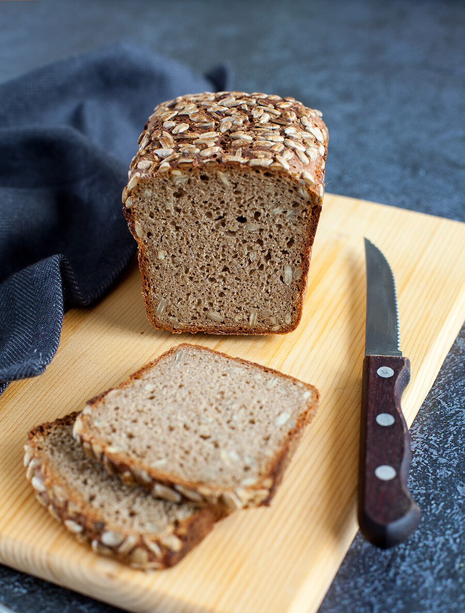

Этот хлеб я обычно пеку на стопроцентной ржаной закваске. Но закваска есть далеко не у всех. А хлеб очень вкусный и простой. Поэтому я рассчитала этот рецепт специально под дрожжевой вариант. Если есть закваска, вы также можете пользоваться данным рецептом. Тогда вместо дрожжей возьмите 130 г освеженной закваски, а из общего объема муки и воды вычтите по 65 г.
Можно подготовить хлеб накануне, оставить для неполной расстойки (на 30–40 минут) и убрать в холодильник в форме, накрыв пакетом. На следующий день дать согреться до комнатной температуры в течение 1 часа и выпекать.
Кроме семечек, можно добавить специи — тмин или кориандр (примерно 1/2 чайной ложки на указанный в рецепте объем). Большую часть семечек можно обжарить, чтобы добавить в тесто, а оставшиеся сырые семечки использовать для посыпки.
Этот хлеб идеален с творожным сыром или с размятым авокадо, черным кунжутом и сочной редиской.